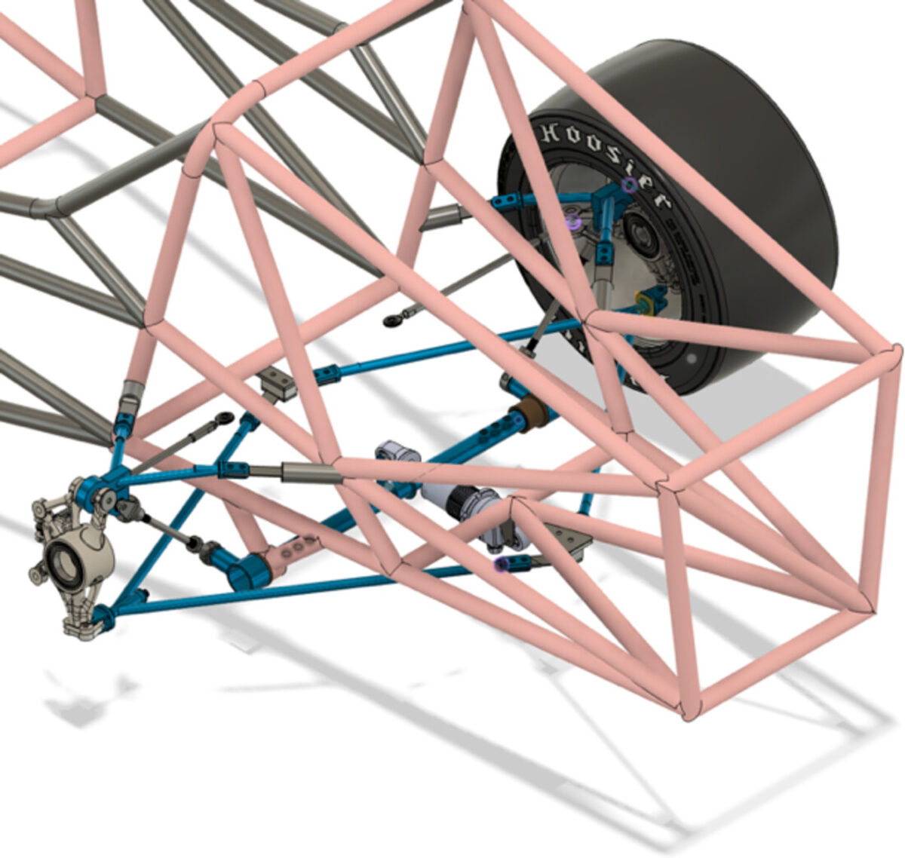
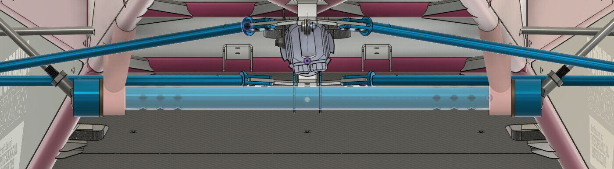
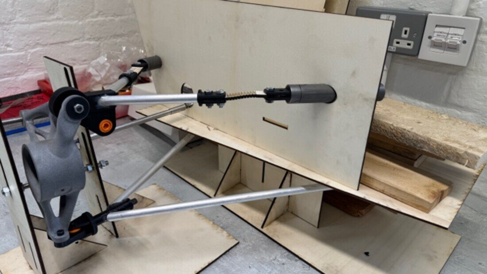
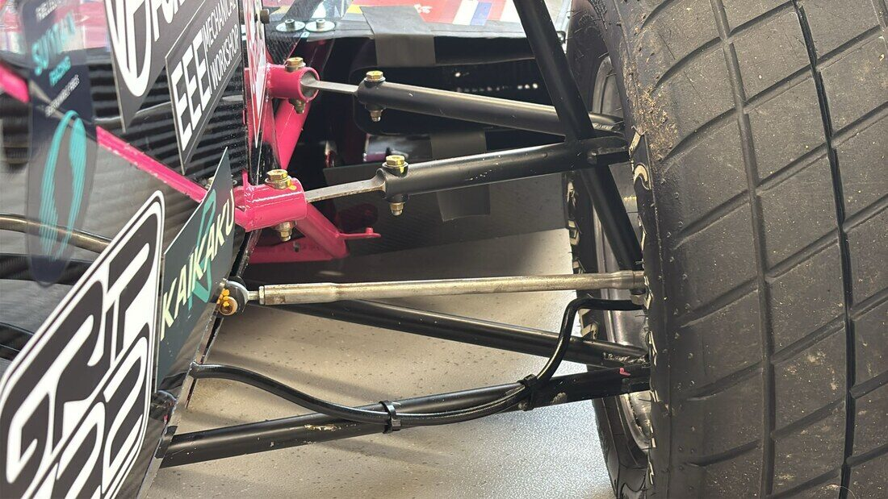

Pull-rod mono-shock front suspension
UCL's front suspension hadn't changed since 2014: push-rod double wishbones with a damper at each corner. It was heavy and expensive, and drivers said the car lacked grip in fast corners.
- −26.2%
- system mass, 7.73 → 5.70 kg (target −10%)
- −9.2%
- system cost, £6,724 → £6,108
- 0.22°
- max camber difference, prototype vs simulation
- 6 / 6
- design targets met
Geometry from what the tyre needs
I doubled the camber-gain target to −0.8° per inch of travel (from −0.4°), set the pick-up points from the swing-axle length (1819 mm) and checked them in kinematic simulation: camber gain −0.78°/in, motion ratio 1.42 and constant in bump, roll centre 42 mm, anti-dive 11%, bump steer 0.05 mm/in.
One damper, tunable roll
A single damper handles both wheels, which lowers the centre of mass. The shared rocker works as a torsion bar in roll, so roll stiffness can be changed separately from heave by choosing one of three pull-rod mounting holes.
Sized for the worst case
I hand-calculated braking, acceleration, cornering and a 5 g kerb-strike load case, giving member loads up to 11.7 kN, and chose T45 wishbones, 4130 tie rods and EN24T steel. I replaced spherical bearings with blade flexures, sized in a MATLAB script using large-deflection beam theory and checked for bending, von Mises and buckling.


Checked on a real prototype
I built a plywood and 3D-printed rig to measure the kinematics. Measured camber gain matched the simulation to within 0.22° across the full wheel travel.

